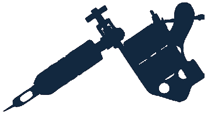

João Antônio
TATTOO
Transformando a sua história em arte
Transformando a sua história em arte
Bem-vindo ao studio
Minha missão é transformar sua história em arte, com o máximo de conforto, segurança, respeito e qualidade
Sou um homem apaixonado por tatuagem
Limpe a tatuagem com àgua corrente e sabão neutro suavemente, em seguida, seque delicadamente com uma toalha limpa e seca. Aplique uma camada fina e uniforme de pomada ou creme para ajudar na cicatrização, de três a quatro vezes ao dia.
Evite tomar sol e banho em piscinas ou no mar durante pelo menos duas semanas após fazer a tatuagem. Isso ajuda a prevenir infecções e o desbotamento da tinta. Após as duas semenas, usar protetor solar.
Evite coçar ou esfregar a tatuagem, mesmo que ela comece a coçar. Isso pode retardar o processo de cicatrização e causar infecções.
Beba bastante água para manter seu corpo hidratado e saudável. Evite alimentos considerados remosos como: bebidas alccólicas, frituras, alimentos industrializados, chocolate, entre outros.
O tatuador fonecerá instruções detalhadas sobre como cuidar da sua tatuagem após a sessão. Certifique-se de seguir todas as instruções cuidadosamente para garantir uma cicatrização adequada e minimizar o risco de infecção ou outros problemas.